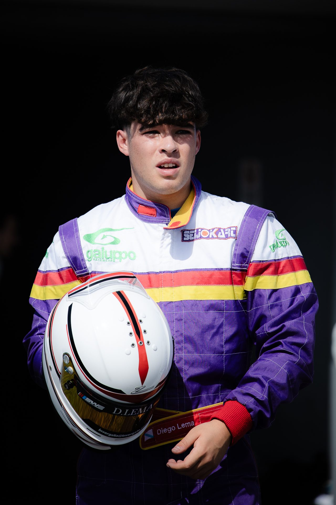
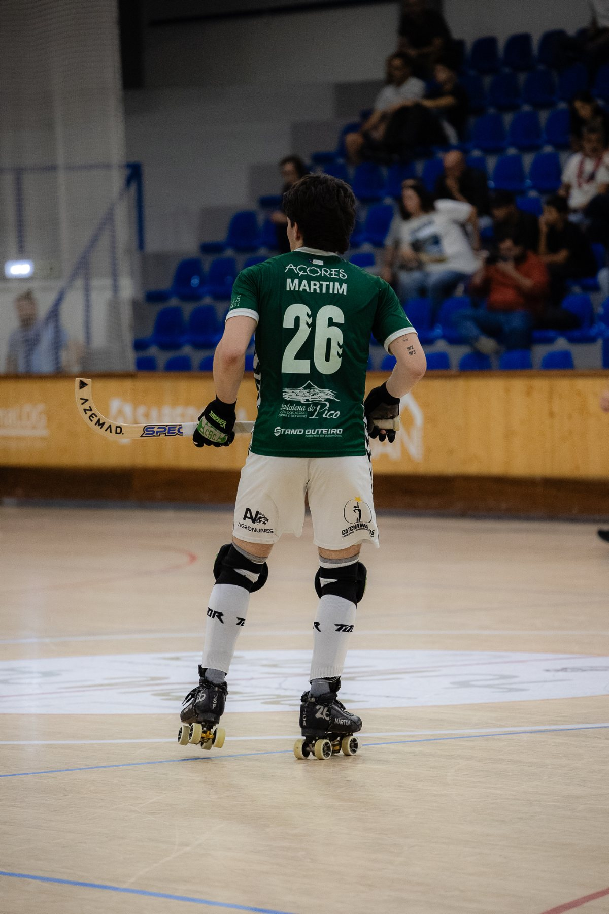
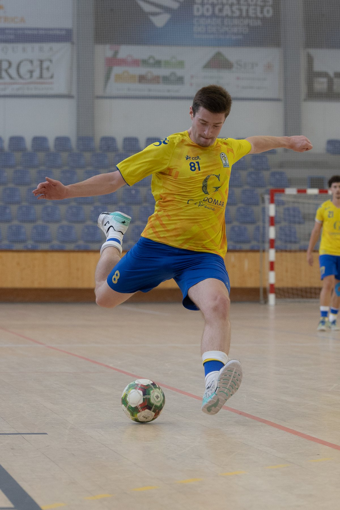

Karting y motorsportCarreras, entrenamientos y retratos de pilotos, en pista y en el paddock.Portafolio

Qué fotografío
Servicios
Trabajo para pilotos, equipos, clubes, organizadores y marcas.

Hockey sobre patinesPartidos y torneos en pabellón, para clubes y deportistas.
Fútbol sala y otras disciplinasPartidos, torneos y eventos de clubes.Sobre mí
Diogo Monteiro
Vivo en Viana do Castelo, en el norte de Portugal, a una hora de Vigo, y fotografío deporte desde hace más de cinco años. Empecé en el karting y en el hockey sobre patines y hoy trabajo también en fútbol sala y otras disciplinas, en Portugal y España.
En una carrera o en un partido fotografío la acción, pero también lo que pasa alrededor: la preparación en boxes, el banquillo, las celebraciones después de un gol o de una victoria.
FAQ
Preguntas frecuentes
¿Qué disciplinas fotografías?
Sobre todo karting, hockey sobre patines y fútbol sala. También acepto trabajos de otras disciplinas, como fútbol, voleibol, baloncesto o atletismo: partidos, carreras, entrenamientos y eventos de clubes.
¿Cómo se organiza una cobertura?
Cuéntame la fecha, el lugar, el horario y para qué vas a usar las fotografías. A partir de ahí acordamos qué es prioritario y te envío un presupuesto.
¿Cuándo recibo las fotografías?
Depende de la duración del evento y del número de fotografías. El plazo queda definido en el presupuesto. Si necesitas publicar el mismo día, puedo enviarte antes una pequeña selección.
¿Puedo usar las fotografías en redes sociales, prensa y con patrocinadores?
Sí. Los usos quedan definidos en el presupuesto: redes sociales, web, prensa, materiales para patrocinadores u otros.
¿Trabajas en pabellones y con poca luz?
Sí. El hockey sobre patines y el fútbol sala se juegan casi siempre en pabellón, a menudo con poca luz, y las carreras de karting terminan muchas veces al final del día. Trabajo con un equipo preparado para eso.
¿Cómo pido un presupuesto?
Con el formulario de esta página o por email a geral@diogomonteirophotos.pt. Indica la disciplina, la fecha, el lugar y lo que necesitas. Respondo normalmente en 24 a 48 horas.
Contacto
Solicitar presupuesto
Indica la disciplina, la fecha y el lugar. Respondo normalmente en 24 a 48 horas.
Emailgeral@diogomonteirophotos.pt
WhatsAppHablar por WhatsApp